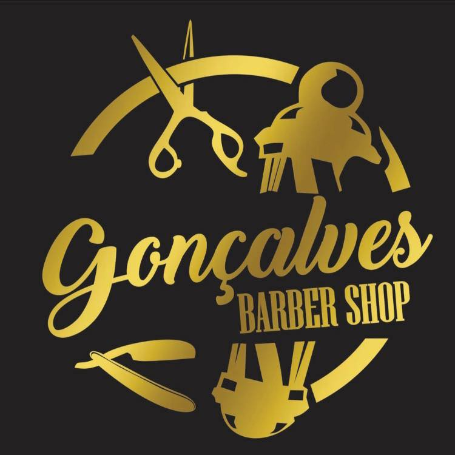

Achei vocês no Google e fiquei impressionado: nota 5,0 com 25 avaliações. Um cliente resumiu bem: Atendimento com horário marcado e sempre pontual nos atendimentos. Recomendo.
E os desenhos na nuca que aparecem nas fotos são de dar orgulho.
Só que quem procura uma barbearia no Ivoty pelo celular ainda esbarra em algumas coisas:
✔ O site novo abre direto, rápido, com tudo numa página só.
✔ No site tem o botão "Marcar horário": um toque e já abre a conversa com vocês.
✔ O site mostra cada serviço e uma galeria com os cortes de vocês — e dá pra colocar o Instagram lá.
✔ No site a fachada nova vem logo na capa, com endereço e mapa pra chegar.
Já deixei o site montado com a cara de vocês: preto e dourado da logo, os cortes e as avaliações. É só dar uma olhada.
Ver o site da Barbearia GonçalvesUm abraço,
Caio